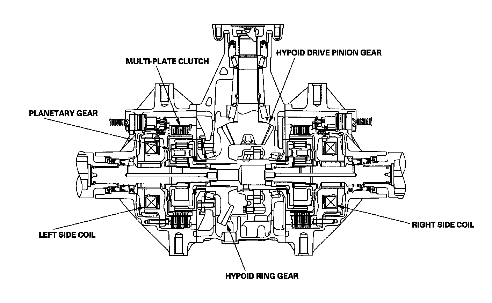
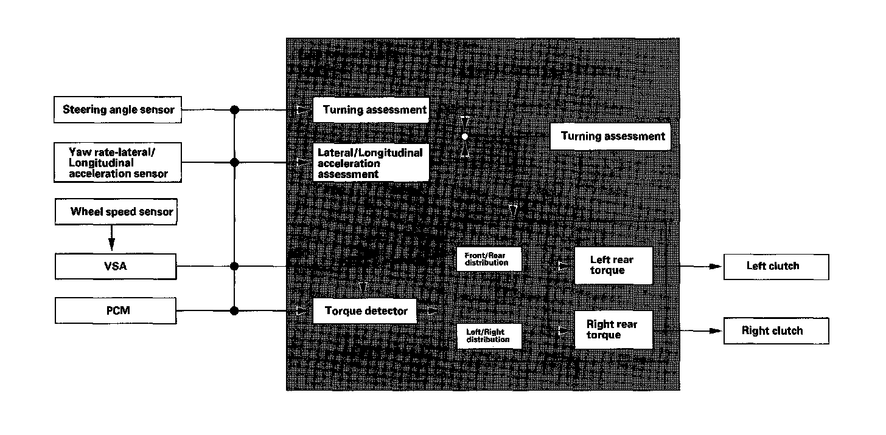

Differential Assembly: Description and Operation
System DescriptionSH-AWD System
Outline
This vehicle is equipped with a Super Handling All-wheel Drive (SH-AWD) rear differential system. This system uses electromagnetic clutches and the SH-AWD control unit to control front to rear torque distribution and independent left to right rear torque distribution. This allows the system to function as a limited slip differential and as a torque distribution system to improve standing start performance, straight-line stability, climbing, and cornering ability.
SH-AWD features include
- Independent torque distribution to the front and rear wheels, and to the left and right wheels for neutral handling when cornering.
- Controls differential (inside/outside) wheel speed in a turn to increase cornering stability.
- Limited slip differential function for better acceleration.
Operation
When driving in a straight line, the front and rear wheels are traveling at the same speed. In a normal turn, the distance traveled by the front wheels is longer than that of the rear wheels. The SH-AWD system monitors the speed of the front wheels, and increases torque to the outside rear wheel proportionally. This improves stability and steering response, and on slippery surfaces it provides improved traction of the 4-wheel drive system.
Construction
1. The differential assembly has a conventional hypoid ring and pinion gear set.
2. The direct electromagnetic clutch system consists of the coils, the planetary gear sets, and the multi-plate clutches that are installed in the side cases on either side of the differential carrier. When driving straight ahead, both rear wheels rotate at the same speed. When turning, current is applied to the appropriate outside wheel main coil to engage the clutch. The amount of current passed through the electromagnetic clutch controls the amount of driving force to the outside wheel.

SH-AWD 4WD Control System
Control System
The SH-AWD control system consists of a SH-AWD control unit, the PCM, the VSA modulator-control unit, along with various sensors and switches that detect the steering angle, the lateral G force, the yaw, and the vehicle speed. A fluid temperature sensor is located on in the rear differential. The control units exchange information via the F-CAN communication lines. The SH-AWD control unit has a self-diagnostic function. If a malfunction is detected, the SH-AWD control unit turns on the SH-AWD indicator in the gauge assembly and the system goes into fail-safe mode. When in fail-safe mode, the vehicle disables the SH-AWD differential. The vehicle defaults to front wheel drive, reduces engine torque to suit the driving conditions.
Driving Force Control
The driving force control distributes the power based on the driver's inputs. It distributes torque to the front and rear wheels based on the throttle opening and the available engine torque output. When turning, torque is applied to the rear wheels independently based on the lateral G input and the direction of the turn. This generates an inward yaw movement to help steer the vehicle around the turn.

Electromagnetic Clutch System
Construction
The electromagnetic clutch system is incorporated into the side case assemblies on both sides of the differential case. The system consists of the multi-plate clutches, the planetary gears, the pressure guides, the solenoid coil assembly (the search coil and the main coil) the armature assembly (the slider and the armature) and the yoke.
Operation
The SH-AWD control unit receives inputs from the PCM and the VSA modulator-control unit on the driving conditions via the F-CAN. The SH-AWD control unit sends signals to the main coils, which engage the electromagnetic clutches that connect the planetary gear set. This increases the torque applied to the rear wheels. The amount of current sent to the clutch is continuously varied as driving conditions change.
Search Coil Detection System
As the clutch discs wear, the air gap between the pressure guides and the multi-plate clutches increases. The increase in air gap changes the magnetic field generated by the main coil and the yoke. The search coil detects these changes in the magnetic field. The SH-AWD control unit uses predetermined maps to compensate for the changes to maintain precise control and smooth clutch engagement.

SH-AWD Control Unit Electrical Connections:
SH-AWD Control Unit Inputs and Outputs
The SH-AWD control unit terminal voltages and the measuring conditions for the SH-AWD control system. Do the SH-AWD inputs and outputs test with the SH-AWD connectors connected.